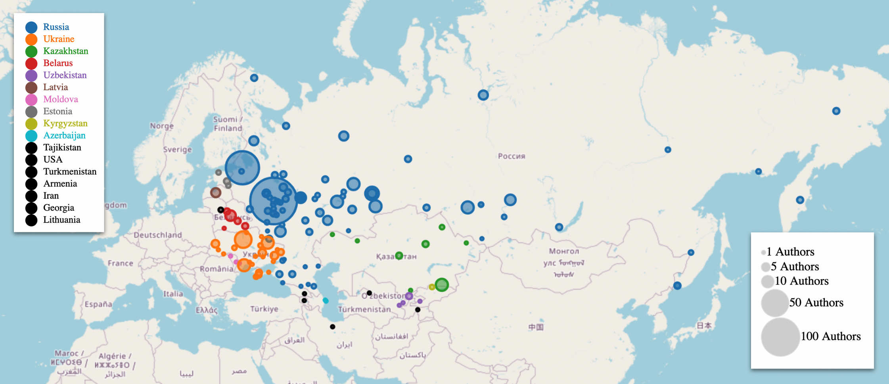
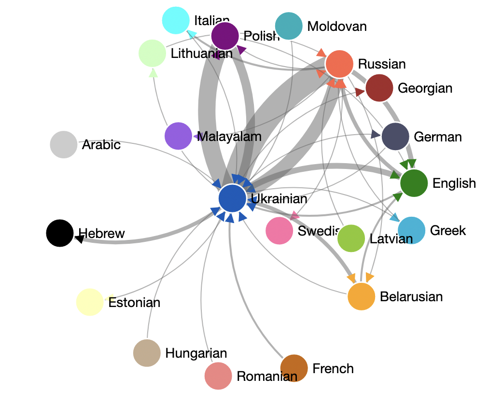

Wartime Russophone Internet Poetry
Developing an archive of wartime Russian-language poetry from the internet to learn more about how computational tools can reveal connections between violence and language (for senior thesis).
Read more

Ukrainian Poetry on Facebook
Developing and analyzing an online archive of contemporary Ukrainian poetry from social media
Read more
War and Peace and Happiness
A data-based analysis on the theme of happiness in Tolstoy's War and Peace.
Read more